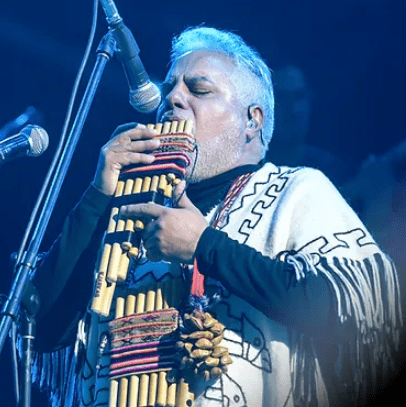

Miembros
Makoto Shishido
Desde su lejana Japón llegó para quedarse. Makoto es un enamorado del charango y el embrujo de la música boliviana, su mayor sueño siempre fué conocer bolivia nunca pensó que un día llegaría a formar parte del grupo los Kjarkas a quienes admiraba y seguía desde muy niño.
Gonzalo Hermosa Jr.

Hijo menor de Wilson Hermosa, el mayor de los hermanos, quién junto a Castel y Gonzalo fundaron los Kjarkas. Gonzalo Jr. heredó la sensibilidad por la música y composición, además de ejecutar los instrumentos de cuerda y vientos, es un excelente constructor de los mismos, es también el líder de grupo Chíla jatun.
Gaston Guardia Bilbao
Pilar fundamental en el grupo, renunció a todos sus proyectos para embarcarse en el más importante de su vida “Los Kjarkas”. Es sin duda un excelente ejecutante de los vientos: quenas, zampoñas y otros aerófonos. Tiene la difícil misión de mostrar al mundo la riqueza de nuestro pueblo.
Gonzalo Hermosa Gonzalez
Director y fundador de esta corriente musical; atiborra la genialidad del músico autodidacta, que se atrevió a emprender un gran proyecto que llegó a ser el emblemade todo un pueblo. Es el compositor boliviano más reconocido en el contexto internacional, cuya savia creativa parece no agotarse nunca.
Elmer Hermosa Gonzalez
Interpreta con mucha sensibilidad y sentimiento los poemas encerrados en las canciones que develan amores y pasiones de hombres y pueblos que aman la vida. En su voz bien timbrada cálida y varonil; parece estar incrustado su pueblo y su mundo perdido entre las montañas.
Lin Angulo
De padres músicos, desde muy niño aprendió el amor por la música boliviana y creció entre huayños y kaluyos de nuestra tradición. Es un virtuoso en la interpretación de la guitarra, en la que plasma todo su sentimiento y maestría.